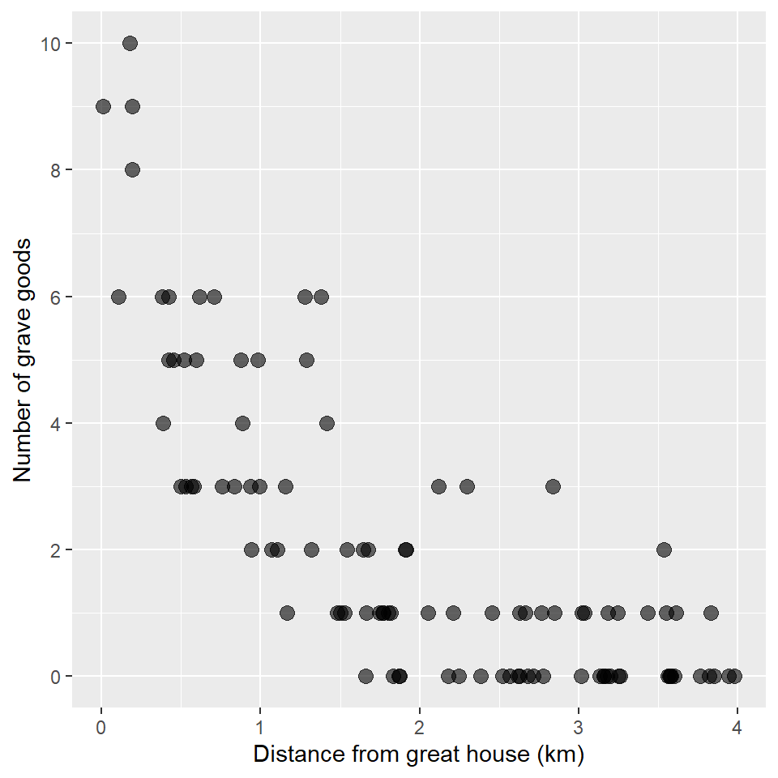
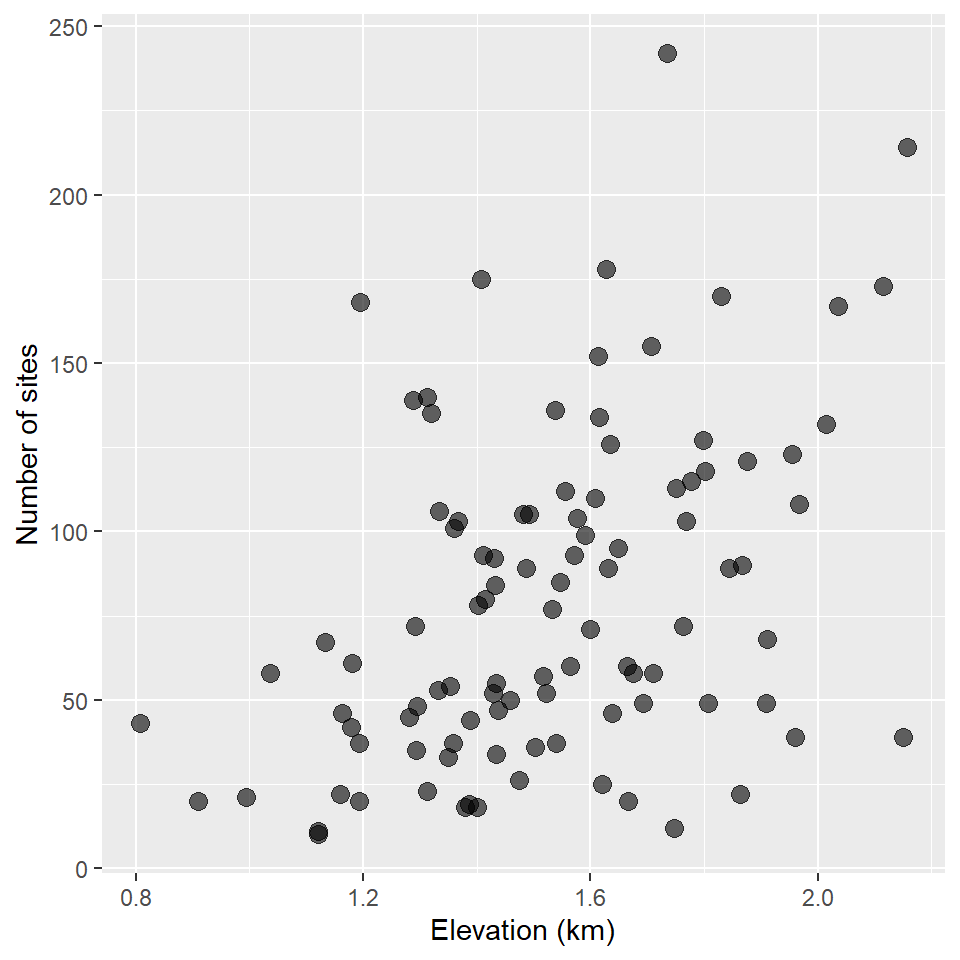
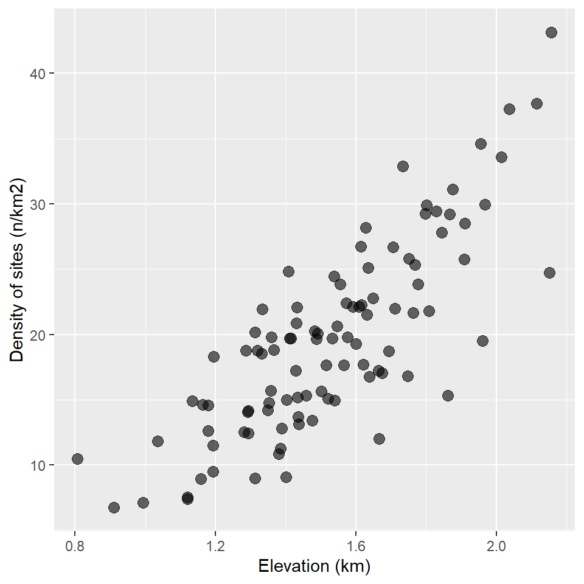

Lab 13: Poisson Regression
(Stats) Modeling count data with Poisson regression. Testing for dispersion and using a negative binomial to account for it. Log offsets. (R) Fitting Poisson and negative binomials models, testing for dispersion, and evaluating models with LRT.
Outline
Objectives
This lab will guide you through the process of
- Fitting a GLM with a
- Gaussian distribution
- Poisson distribution
- Offsets
- Dispersion
R Packages
We will be using the following packages:
Data
-
grave_goods- A hypothetical dataset including counts of grave goods and measures of distance (in meters) from a great house in the American Southwest.
- package: NA
- reference: https://github.com/kbvernon/qaad/tree/master/datasets
-
site_counts- A hypothetical dataset including site counts per kilometer and estimates of elevation (in meters) on an east-west transect through the state of Utah.
- package: NA
- reference: https://github.com/kbvernon/qaad/tree/master/datasets
Poisson regression
Here, we’re going to work with a response variable consisting of counts. That means poisson regression, which requires that we specify a poisson distribution with a log link. Here, we’ll be using the grave_goods data to answer the following
Question Does distance from a great house (measured in kilometers) drive variation in the number of grave goods at archaeological sites?
So, first, we’ll load in the data. In this case, we’ll have to pull the data in from a remote source. This is a made-up data set, so you should not draw any conclusions from it. It does have some intuition behind it, but it’s mainly for illustration purposes.
file_url <- "https://raw.githubusercontent.com/kbvernon/qaad/master/labs/grave_goods.csv"
grave_goods <- read_csv(file_url)
grave_goods
#> # A tibble: 100 × 2
#> goods distance
#> <dbl> <dbl>
#> 1 3 1.16
#> 2 0 3.16
#> 3 2 1.64
#> 4 2 3.53
#> 5 0 3.76
#> 6 9 0.192
#> 7 3 2.12
#> 8 0 3.57
#> 9 1 2.21
#> 10 0 1.83
#> # … with 90 more rowsAs always, we’ll plot these data using a scatterplot. Note that I use scale_y_continuous() to change the breaks and labels on the y-axis to remove any decimal values. That’s just to emphasize that this is count data.
ggplot(grave_goods, aes(distance, goods)) +
geom_point(
size = 3,
alpha = 0.6
) +
scale_y_continuous(
breaks = seq(0, 10, by = 2),
labels = seq(0, 10, by = 2)
) +
labs(
x = "Distance from great house (km)",
y = "Number of grave goods"
)
Looks like there could be a trend, maybe… Let’s use a GLM to find out! Again, we’ll specify an exponential distribution and a link function using the family argument to glm(), providing it with a family function that itself takes a link argument. It looks like this:
Recall that you do not have to explicitly state the link argument as the log link is the default for poisson(), so you could also specify the model this way:
glm_goods <- glm(
goods ~ distance,
family = poisson,
data = grave_goods
)
summary(glm_goods)
#>
#> Call:
#> glm(formula = goods ~ distance, family = poisson, data = grave_goods)
#>
#> Deviance Residuals:
#> Min 1Q Median 3Q Max
#> -1.837 -0.858 -0.432 0.500 2.299
#>
#> Coefficients:
#> Estimate Std. Error z value Pr(>|z|)
#> (Intercept) 2.1100 0.1092 19.3 <0.0000000000000002 ***
#> distance -0.9551 0.0835 -11.4 <0.0000000000000002 ***
#> ---
#> Signif. codes: 0 '***' 0.001 '**' 0.01 '*' 0.05 '.' 0.1 ' ' 1
#>
#> (Dispersion parameter for poisson family taken to be 1)
#>
#> Null deviance: 263.933 on 99 degrees of freedom
#> Residual deviance: 88.369 on 98 degrees of freedom
#> AIC: 280.4
#>
#> Number of Fisher Scoring iterations: 5Looks like our intercept and slope estimates are significant. How about the deviance? To put that in slightly less cryptic terms. We have tests for the model parameters (the coefficients), but how does the model as a whole do at describing the data? To answer that question, let’s first compare the AIC of our target model to the AIC of an intercept-only model. Then we’ll use the Likelihood Ratio Test to see if this model is significantly better than an intercept-only model.
glm_null <- glm(
goods ~ 1,
family = poisson(link = "log"),
data = grave_goods
)
AIC(glm_goods) < AIC(glm_null)
#> [1] TRUE
anova(glm_goods, test = "LRT")
#> Analysis of Deviance Table
#>
#> Model: poisson, link: log
#>
#> Response: goods
#>
#> Terms added sequentially (first to last)
#>
#>
#> Df Deviance Resid. Df Resid. Dev Pr(>Chi)
#> NULL 99 263.9
#> distance 1 176 98 88.4 <0.0000000000000002 ***
#> ---
#> Signif. codes: 0 '***' 0.001 '**' 0.01 '*' 0.05 '.' 0.1 ' ' 1Looks like we got the result we’re looking for! How fortunate!
Offset
In Poisson regression, we assume that the counts are the result of an underlying process (a “Poisson process” if you prefer statistical jargon). The mean or central tendency of that process is assumed to be a log-linear function of some covariates. In the example above, we used distance from great house as our covariate. It’s not that distance per se is the underlying cause or explanation, but it may be a good approximation to the cause. For instance, proximity to the great house can indicate status and status can lead to increased wealth and increased wealth can lead to more grave goods. But, that might not be the only reason we find more grave goods nearer to great houses. It might be that goods nearer to the great house have better preservation. Or, it could be that as archaeologists we are more interested in things happening around the great house and are, thus, more inclined to sample archaeological materials nearer to the great house. That is to say, the counts in our sample may not just be a function of the underlying process (ie status and wealth) but also a function of sampling intensity. To account for differences in sampling intensity or to “control” for sampling intensity, we can include a constant offset.
To illustrate the use of offsets, consider a model of site counts. With this model, we are trying to assess whether some relationship exists between the number of sites and elevation, perhaps because elevation is a good proxy for environmental productivity in our study region. However, we also know that we surveyed more intensely in some places than others. As a simple measure of differences in survey intensity, we have the size or area of each of our survey blocks. And, so we want to weight the site counts in each survey block by the area of the block. In effect, we want a measure of density, of counts per unit area. In a log linear model, that has this form:
\[ \begin{align} log\; (\lambda_i/A_i) &= \beta X_i \\ log\; (\lambda_i) - log\; (A_i) &= \beta X_i \\ log\; (\lambda_i) &= \beta X_i + log\; (A_i) \end{align} \]
where \(A_i\) is the area of survey block \(i\) and \(\lambda_i\) is the count at \(i\).
Notice that this is still a log-linear model of the counts \(\lambda_i\). However, we now include as a constant offset \(log\; (A_i)\). We say constant offset because the coefficient for this term is just 1. Importantly, the constant offset is added to the effect of the covariates, so you can read the equation as saying that greater sampling intensity leads to larger counts. It’s also worth noting that we are using a spatial measure to describe our sampling intensity, but we could have used time as well.
So, now the question: how do we add these in R? There are a few ways to do this, but I’m going to show you my preferred way, which is to incorporate the offset as a term in the model formula using the offset() function. I prefer doing it this way because it’s more expressive of the underlying logic.
OK, to see how this works, let’s first download our survey data.
file_url <- "https://raw.githubusercontent.com/kbvernon/qaad/master/slides/surveys.csv"
surveys <- read_csv(file_url)
surveys
#> # A tibble: 100 × 4
#> block sites area elevation
#> <dbl> <dbl> <dbl> <dbl>
#> 1 1 53 2.86 1.33
#> 2 2 92 4.41 1.43
#> 3 3 108 3.61 1.97
#> 4 4 52 3.44 1.52
#> 5 5 37 2.48 1.54
#> 6 6 132 3.93 2.01
#> 7 7 46 2.74 1.64
#> 8 8 10 1.33 1.12
#> 9 9 48 3.39 1.29
#> 10 10 103 5.47 1.37
#> # … with 90 more rowsLet’s visualize the counts first.
ggplot(surveys, aes(elevation, sites)) +
geom_point(
size = 3,
alpha = 0.6
) +
labs(
x = "Elevation (km)",
y = "Number of sites"
)
It kinda looks like there might be a trend there. What if we control for the area of each survey location?
ggplot(surveys, aes(elevation, sites/area)) +
geom_point(
size = 3,
alpha = 0.6
) +
labs(
x = "Elevation (km)",
y = "Density of sites (n/km2)"
)
Now, we fit a model with the offset included. It looks like this:
glm_surveys <- glm(
sites ~ elevation + offset(log(area)),
family = poisson,
data = surveys
)
summary(glm_surveys)
#>
#> Call:
#> glm(formula = sites ~ elevation + offset(log(area)), family = poisson,
#> data = surveys)
#>
#> Deviance Residuals:
#> Min 1Q Median 3Q Max
#> -3.307 -1.527 -0.399 0.884 4.225
#>
#> Coefficients:
#> Estimate Std. Error z value Pr(>|z|)
#> (Intercept) 1.3899 0.0678 20.5 <0.0000000000000002 ***
#> elevation 1.0537 0.0419 25.1 <0.0000000000000002 ***
#> ---
#> Signif. codes: 0 '***' 0.001 '**' 0.01 '*' 0.05 '.' 0.1 ' ' 1
#>
#> (Dispersion parameter for poisson family taken to be 1)
#>
#> Null deviance: 915.97 on 99 degrees of freedom
#> Residual deviance: 288.14 on 98 degrees of freedom
#> AIC: 892.1
#>
#> Number of Fisher Scoring iterations: 4A couple of things to note here. First, we specify the log of the area as this is a log-linear model. Wrapping that in the offset() function simply tells R to keep it’s coefficient held fixed at 1. That is, to make it a constant offset. Second, the area does not occur as a term in the coefficients table. That’s because it is incorporated into the model as a constant offset.
Now, let’s see how this model that controls for sampling intensity compares to a model that doesn’t. In this case, we do not do a Likelihood Ratio Test, as the degrees of freedom are the same in both cases (the offset does not add to model complexity), so a simple comparison of the AIC is sufficient.
Notice, too, that adding the offset changes coefficient estimates, quite substantially in the case of the intercept.
summary(glm_null)
#>
#> Call:
#> glm(formula = sites ~ elevation, family = poisson, data = surveys)
#>
#> Deviance Residuals:
#> Min 1Q Median 3Q Max
#> -10.728 -4.043 -0.981 2.556 12.815
#>
#> Coefficients:
#> Estimate Std. Error z value Pr(>|z|)
#> (Intercept) 2.9257 0.0664 44.0 <0.0000000000000002 ***
#> elevation 0.9279 0.0410 22.6 <0.0000000000000002 ***
#> ---
#> Signif. codes: 0 '***' 0.001 '**' 0.01 '*' 0.05 '.' 0.1 ' ' 1
#>
#> (Dispersion parameter for poisson family taken to be 1)
#>
#> Null deviance: 2953.4 on 99 degrees of freedom
#> Residual deviance: 2442.2 on 98 degrees of freedom
#> AIC: 3046
#>
#> Number of Fisher Scoring iterations: 5
summary(glm_surveys)
#>
#> Call:
#> glm(formula = sites ~ elevation + offset(log(area)), family = poisson,
#> data = surveys)
#>
#> Deviance Residuals:
#> Min 1Q Median 3Q Max
#> -3.307 -1.527 -0.399 0.884 4.225
#>
#> Coefficients:
#> Estimate Std. Error z value Pr(>|z|)
#> (Intercept) 1.3899 0.0678 20.5 <0.0000000000000002 ***
#> elevation 1.0537 0.0419 25.1 <0.0000000000000002 ***
#> ---
#> Signif. codes: 0 '***' 0.001 '**' 0.01 '*' 0.05 '.' 0.1 ' ' 1
#>
#> (Dispersion parameter for poisson family taken to be 1)
#>
#> Null deviance: 915.97 on 99 degrees of freedom
#> Residual deviance: 288.14 on 98 degrees of freedom
#> AIC: 892.1
#>
#> Number of Fisher Scoring iterations: 4Dispersion
A key assumption of Poisson regression and exponential models generally, is that the variance of the errors is equal to the mean response weighted by a scaling parameter \(\phi\), which is assumed to be 1.
\[Var(\epsilon) = \phi\mu\]
When \(\phi > 1\), you get over-dispersion. This is important because it artificially shrinks the standard errors of the coefficients and, thus, reduces the p-values, biasing our inferences about the coefficients.
There are a couple of ways to check for over-dispersion. Unfortunately, base R doesn’t provide any functions that do that for you, so you have to do it manually. That said, this does give you an opportunity to interact more with a model object and to understand how to access its components.
Here, we’re going to compare the dispersion estimate (calculated by squaring the deviance residuals) and comparing that to the residual degrees of freedom. Values greater than one are indicative of over-dispersion.
# get deviance residuals
dev.res <- residuals(glm_surveys, type = "deviance")
# calculate dispersion
dispersion <- sum(dev.res^2)
# get residual degrees of freedom
df <- df.residual(glm_surveys)
dispersion/df
#> [1] 2.94You can also use a \(\chi^2\) test to evaluate whether the estimate is significantly different than 1.
1 - pchisq(dispersion, df)
#> [1] 0So, looks like there’s dispersion. How do we account for this? My suggestion is to use a negative binomial model as it still uses Maximum Likelihood Estimation, meaning you get all the measures you need for inference on the model. The one downside to this is that the base R stats package does not provide for a GLM with a negative binomial error distribution. For that, you have to go to another package, in this case the venerable MASS package. The syntax is a smidge different, too, showing some of the age of R. Or, I should say, some of the historical constraints of R owing to its lengthy evolution.
glmnb_surveys <- glm.nb(
sites ~ elevation + offset(log(area)),
data = surveys
)
summary(glmnb_surveys)
#>
#> Call:
#> glm.nb(formula = sites ~ elevation + offset(log(area)), data = surveys,
#> init.theta = 38.29760796, link = log)
#>
#> Deviance Residuals:
#> Min 1Q Median 3Q Max
#> -2.3082 -0.8547 -0.0715 0.6876 2.2208
#>
#> Coefficients:
#> Estimate Std. Error z value Pr(>|z|)
#> (Intercept) 1.3138 0.1196 11.0 <0.0000000000000002 ***
#> elevation 1.0769 0.0759 14.2 <0.0000000000000002 ***
#> ---
#> Signif. codes: 0 '***' 0.001 '**' 0.01 '*' 0.05 '.' 0.1 ' ' 1
#>
#> (Dispersion parameter for Negative Binomial(38.3) family taken to be 1)
#>
#> Null deviance: 315.05 on 99 degrees of freedom
#> Residual deviance: 106.94 on 98 degrees of freedom
#> AIC: 817.1
#>
#> Number of Fisher Scoring iterations: 1
#>
#>
#> Theta: 38.30
#> Std. Err.: 8.93
#>
#> 2 x log-likelihood: -811.06
summary(glm_surveys)
#>
#> Call:
#> glm(formula = sites ~ elevation + offset(log(area)), family = poisson,
#> data = surveys)
#>
#> Deviance Residuals:
#> Min 1Q Median 3Q Max
#> -3.307 -1.527 -0.399 0.884 4.225
#>
#> Coefficients:
#> Estimate Std. Error z value Pr(>|z|)
#> (Intercept) 1.3899 0.0678 20.5 <0.0000000000000002 ***
#> elevation 1.0537 0.0419 25.1 <0.0000000000000002 ***
#> ---
#> Signif. codes: 0 '***' 0.001 '**' 0.01 '*' 0.05 '.' 0.1 ' ' 1
#>
#> (Dispersion parameter for poisson family taken to be 1)
#>
#> Null deviance: 915.97 on 99 degrees of freedom
#> Residual deviance: 288.14 on 98 degrees of freedom
#> AIC: 892.1
#>
#> Number of Fisher Scoring iterations: 4Not much change between the two models in terms of coefficient estimates, but notice that the standard errors for the coefficients are considerably larger in the case of the negative binomial model. This is to be expected since over-dispersion shrinks the standard errors. In the case of the negative binomial, we can be much more confident that the coefficient estimates are significantly different than zero.
Homework
No homework this week!